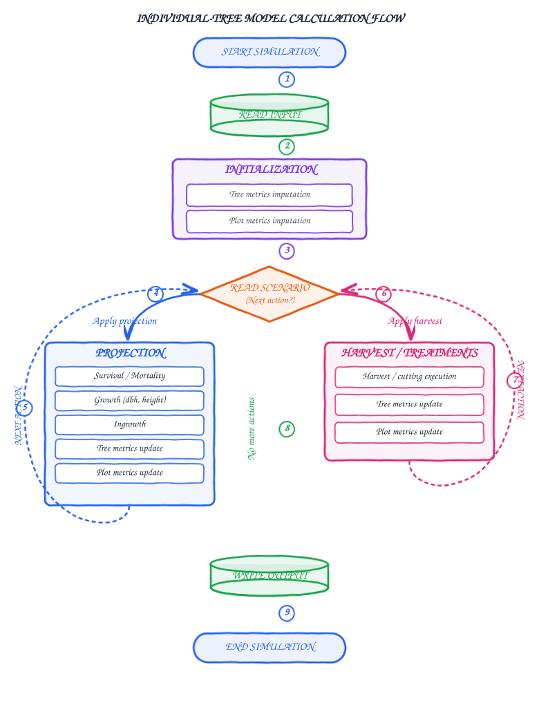
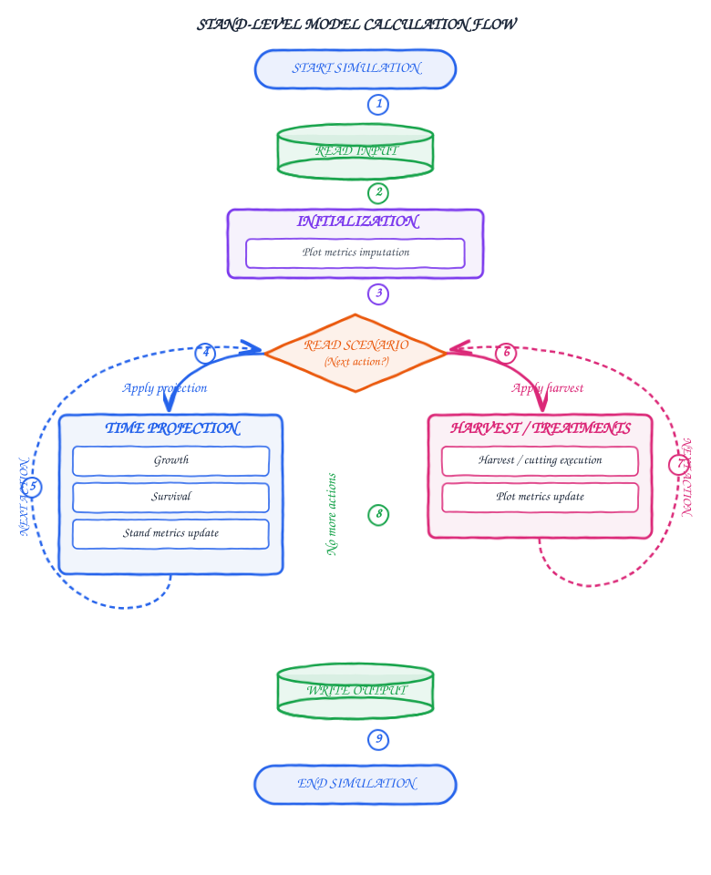

Forest Growth Models in SIMANFOR
SIMANFOR integrates a diverse catalog of forest growth models to simulate stand development and evaluate silvicultural management alternatives (see harvest models).
Models are divided into two main growth categories plus a dedicated suite of silvicultural harvest models:
- Individual-tree growth models: Operate at the single-tree level, simulating tree growth, mortality probability, and ingrowth in a detailed manner, and computing plot attributes based on all individual trees present in the plot.
- Stand-level growth models: Operate at the aggregate plot or stand level, projecting variables such as tree density, basal area, total volume, and dominant height.
- Thinning models: Define tree extraction and harvesting according to silvicultural criteria (thinning from below, from above, systematic, by species, or with crop trees) for both tree and stand models.
Individual-tree model calculation flow
In individual-tree models, the simulation engine calculates biological processes considering individual trees and aggregated plot dynamics:

Tree-level simulation phases:
- Read initial inventory: Loads
Plots(identifiers, site factors, etc.) andTrees(diameters, heights, species, and tree expansion factors). - Initialization: Estimates missing inventory variables (heights, volumes, crown variables...) and computes aggregate plot metrics.
- Scenario simulation loop: According to user-defined silvicultural scenarios:
- Time projection: Evaluates individual survival, applies growth, incorporates new trees (ingrowth), and updates tree and plot metrics for the specified time period (this period must follow the recommendations of the model used).
- Harvest / Treatments: Removes selected trees (by size, species, or silvicultural rule) and updates remaining stand structure. For more details on thinning options, see the harvest models guide.
- Write output: Generates output tables with the state of the stand and trees at each simulation step.
Stand-level model calculation flow
Stand models simplify inventory data input, requiring only aggregate plot-level parameters without tree lists:

Stand-level simulation phases:
- Read initial inventory: Loads only the
Plotssheet (age, density, basal area, dominant height as required). - Initialization: Imputes required and missing initial stand attributes (volume, site index...).
- Scenario simulation loop:
- Time projection: Models aggregate stand growth and natural mortality curves, and updates plot variables for the established time period (this period must follow the recommendations of the model used).
- Harvest / Treatments: Applies direct reductions to density, basal area, or volume, updating plot metrics afterwards (see harvest models).
- Write output: Produces aggregated evolution tables.
Harvest models configuration
Silvicultural interventions are defined in scenarios by selecting the appropriate harvest model, the thinning criterion (density, basal area, or volume), and the percentage intensity:

For full details on each harvest model, behavior in mixed stands, and parameter descriptions, see the harvest models and silvicultural treatments guide.
Available individual-tree models
| Model | Target Species | Region |
|---|---|---|
| Height calculation for Spain | Todas las especies forestales arbóreas de España | Spain |
| IBEROPS (calibrated) | Pinus sylvestris | Iberian Mountain Range and Central System (Ávila, Burgos, Segovia, and Soria; Spain) |
| IBEROPS (original) | Pinus sylvestris | Iberian Mountain Range and Central System (Ávila, Burgos, Segovia, and Soria; Spain) |
| IBEROPT (calibrated) | Pinus pinaster, Pinus pinaster mesogeensis | Southern Iberian Mountain Range (Cuenca, Guadalajara, Teruel, and Soria; Spain) |
| IBEROPT (original) | Pinus pinaster, Pinus pinaster mesogeensis | Southern Iberian Mountain Range (Cuenca, Guadalajara, Teruel, and Soria; Spain) |
| Mixed stands of Spain | Pinus sylvestris, Pinus uncinata, Pinus pinea, Pinus halepensis, Pinus nigra, Pinus pinaster, Quercus robur, Quercus petraea, Quercus pyrenaica, Quercus faginea, Quercus ilex, Quercus suber, Fagus sylvatica | Spain |
| PINEA Andalucía | Pinus pinea | Andalusia (Huelva, Cádiz, and Seville; Spain) |
| PINEA Central System | Pinus pinea | Central System (Palencia, Zamora, Valladolid, Burgos, Salamanca, Ávila, Segovia, and Madrid; Spain) |
| PINEA in Catalonia | Pinus pinea | Catalonia (Girona, Lleida, Barcelona, and Tarragona; Spain) |
| Pinus halepensis in Aragón | Pinus halepensis | Aragón (Zaragoza, Huesca and Teruel; Spain) |
| Pinus halepensis in Cataluña and Aragón | Pinus halepensis | Middle Ebro Valley (Aragón) and Catalonia (Huesca, Zaragoza, Girona, Barcelona, Lleida, and Tarragona; Spain) |
| Pinus nigra in Cataluña | Pinus nigra | Catalonia (Girona, Lleida, Barcelona, and Tarragona; Spain) |
| Pinus sylvestris Catalonia natural stands | Pinus sylvestris | Catalonia (Girona, Lleida, Barcelona, and Tarragona; Spain) |
| Pinus sylvestris Catalonia plantations | Pinus sylvestris | Catalonia (Girona, Lleida, Barcelona, and Tarragona; Spain) |
| Pure stands of Spain | Pinus sylvestris, Pinus uncinata, Pinus pinea, Pinus halepensis, Pinus nigra, Pinus pinaster, Pinus canariensis, Pinus radiata, Abies alba, Juniperus thurifera, Quercus robur, Quercus petraea, Quercus pyrenaica, Quercus faginea, Quercus ilex, Quercus suber, Populus nigra, Eucalyptus globulus, Eucalyptus camaldulensis, Fagus sylvatica, Castanea sativa, Quercus pubescens, Populus x canadensis, Betula alba | Spain |
| Quercus pyrenaica in Castille and Leon | Quercus pyrenaica | Castille and Leon (León, Palencia, Burgos, Zamora, Valladolid, Soria, Salamanca, Ávila, and Segovia; Spain) |
| Quercus pyrenaica in Castille and Leon - LifeRebollo+ Project | Quercus pyrenaica | Castille and Leon (León, Palencia, Burgos, Zamora, Valladolid, Soria, Salamanca, Ávila, and Segovia; Spain) |
| RAP-ORGANON, Alnus rubra plantations in Oregon and Washington (USA) | Alnus rubra | Oregon and Washington (USA) |
| SiTree - Norway model | spruce, pine, beech, others | Norway |
| Yield model (Spain) | Todas las especies forestales de España | Spain |
Available stand-level models
| Model | Target Species | Region |
|---|---|---|
| Betula pubescens in Galicia | Betula pubescens | Galicia (Spain) |
| Cistus ladanifer in Zamora | Cistus ladanifer | Zamora (Spain) |
| Pinus nigra in Castilla y León | Pinus nigra | Castilla y León (Spain) |
| Pinus pinaster in coastal areas of Galicia | Pinus pinaster, Pinus pinaster atlantica | Galicia (Spain) |
| Pinus pinaster in inland areas of Galicia | Pinus pinaster, Pinus pinaster atlantica | Galicia (Spain) |
| Pinus pinaster mesogeensis in the Iberian Peninsula | Pinus pinaster, Pinus pinaster mesogeensis | Iberian Peninsula |
| Pinus radiata in Galicia | Pinus radiata | Galicia (Spain) |
| Pinus sylvestris in Galicia | Pinus sylvestris | Galicia (Spain) |
| Pinus sylvestris in the High Ebro Basin | Pinus sylvestris | High Ebro Basin (Spain) |
| Pinus sylvestris in Ukraine | Pinus sylvestris | Ukraine |
| Populus sp. in Northeast Spain | Populus sp. | Northeast Spain |
| Quercus petraea in the Cantabrian Mountains | Quercus petraea | Cantabrian Mountains (Spain) |
| Quercus robur in Galicia | Quercus robur | Galicia (Spain) |
| RETECHFOR - Castilla y León | Pinus sylvestris, Pinus pinaster | Castilla y León (Spain) |
| SILVES - Pinus sylvestris in Iberian System and Central System | Pinus sylvestris | Iberian System and Central System (Spain) |
| SILVES - Pinus sylvestris in Madrid | Pinus sylvestris | Madrid (Spain) |
| Stand models for Romania | Todas las especies | Romania |
| Stand models for Romania (BAU) | Todas las especies | Romania |
| Tectona grandis in Campeche (Mexico) | Tectona grandis | Campeche (Mexico) |